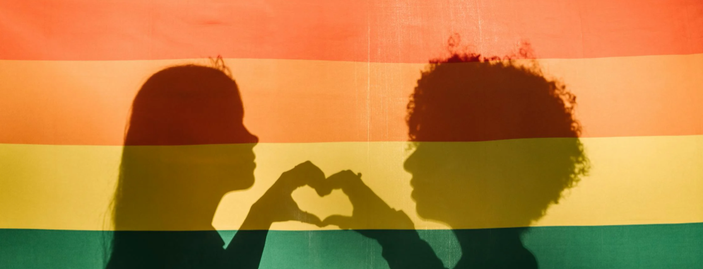
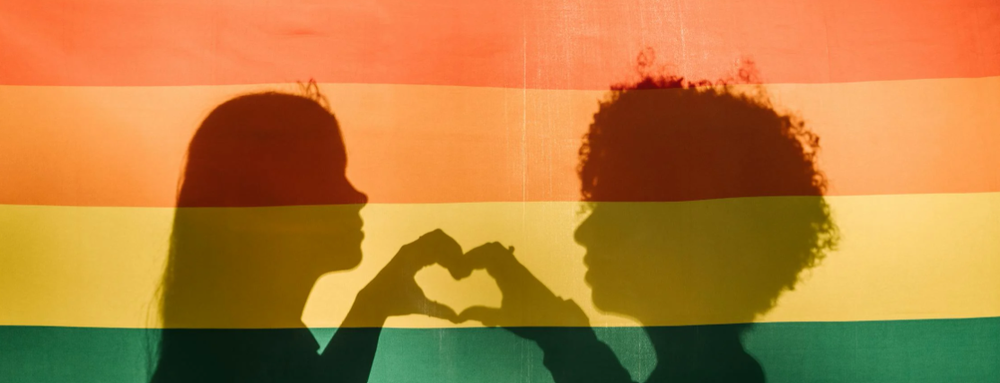
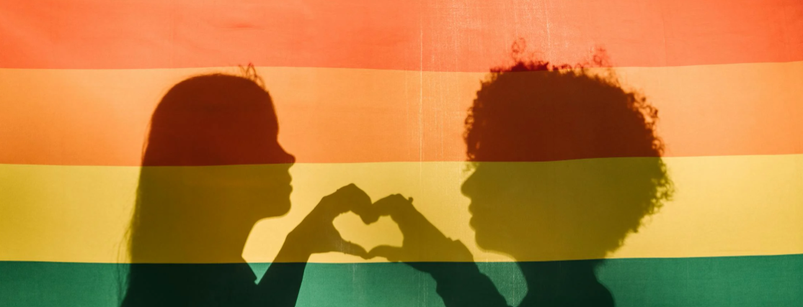

Pride er både en fest og en kamp – en global bevægelse, der hylder mangfoldighed og kæmper for LGBT+ rettigheder. I Danmark har Pride en særlig betydning som synlighed, fællesskab og politisk markering for lige vilkår. Pride er mere end en parade – det er en fejring af kærlighed og frihed, en protest mod diskrimination, og et fællesskab på tværs af landegrænser. I Danmark er Pride blevet en vigtig del af kulturen, der både skaber glæde og minder os om, at rettigheder aldrig er givet én gang for alle, men skal beskyttes og udvikles.
Oprindelse: Pride opstod i USA i 1970 som en direkte reaktion på Stonewall-optøjerne i New York året før, hvor LGBT+ personer protesterede mod politiets diskriminerende razziaer.
Formål: Pride handler om at synliggøre mangfoldighed inden for seksualitet og kønsidentitet, skabe accept og kæmpe for rettigheder.
Global betydning: I dag afholdes Pride-parader og arrangementer i storbyer over hele verden – fra São Paulo til Budapest – som både festlige fejringer og politiske manifestationer.
Symbolik: Regnbueflaget er blevet et globalt symbol på stolthed, frihed og retten til at være sig selv.
